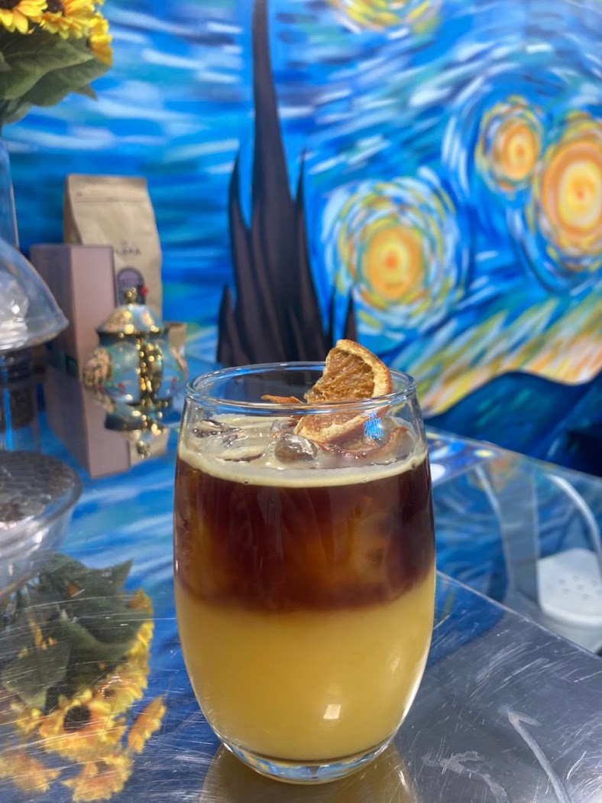
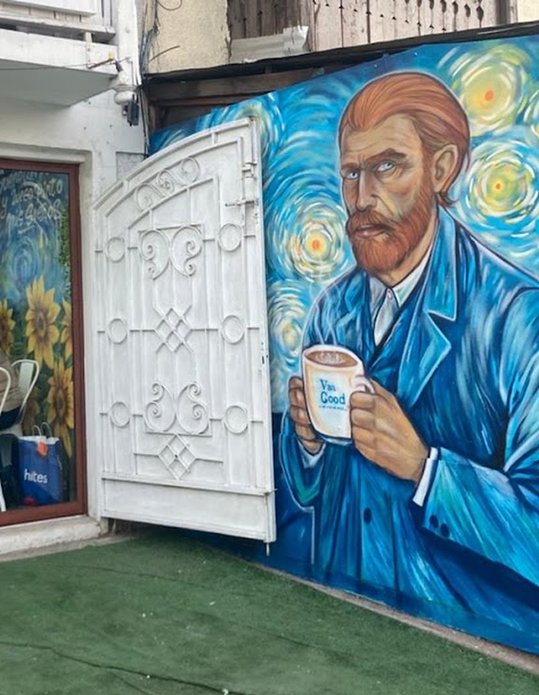
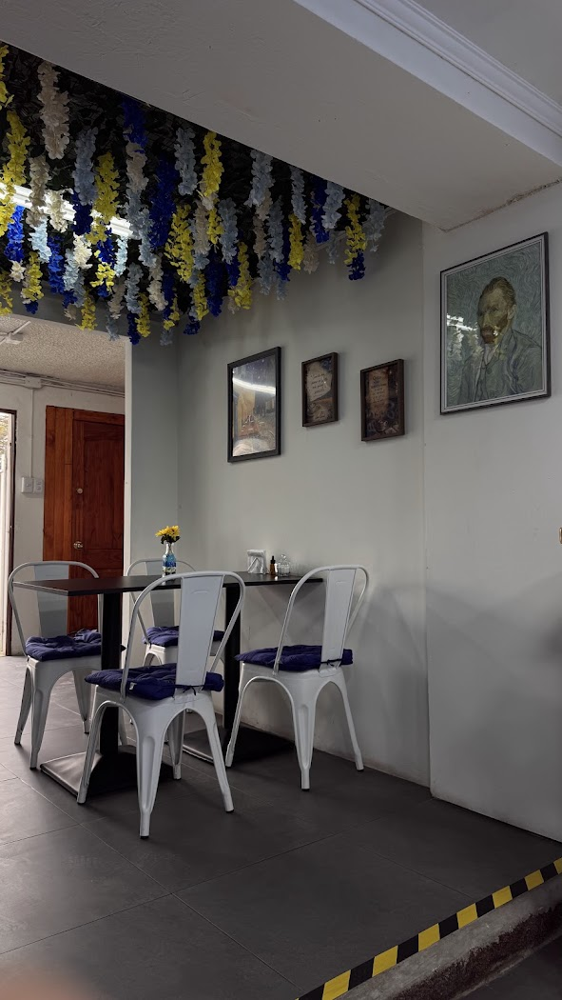
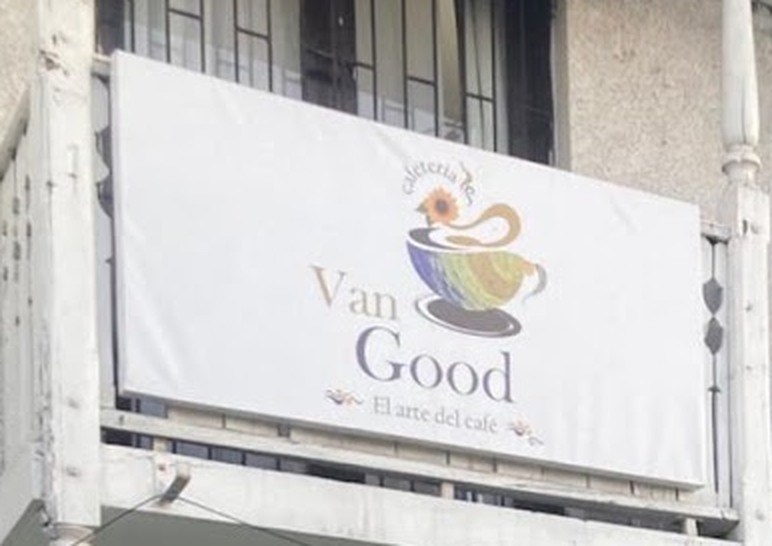

Un café que es también una galería
Mural de La noche estrellada, girasoles y un Van Gogh con una taza de la casa en la mano. Su propio letrero lo dice: "el arte del café".

Cafetería · El arte del café · San Bernardo
Café, chocolate y sándwiches en ciabatta en O'Higgins 191, bajo un mural de Van Gogh pintado en la propia pared. Cinco estrellas, sin excepción.
Ocho opiniones en Google y las ocho son de cinco estrellas.
Mural de La noche estrellada, girasoles y un Van Gogh con una taza de la casa en la mano. Su propio letrero lo dice: "el arte del café".
"Los sándwiches exquisitos, tibios y crujientes"; "muy ricos, en especial los de ciabatta" — dos reseñas reales, distintas, diciendo lo mismo.
Además de las mesas del salón, su ficha de Google confirma pedidos desde el automóvil — poco común en una cafetería de barrio.
El nombre es un juego con Van Gogh, y no se queda en el chiste: tienen el mural de La noche estrellada pintado en la pared de la calle, girasoles en el salón y cuadros enmarcados adentro.
Ocho opiniones en Google, ocho de cinco estrellas. Una de ellas resume el lugar completo: "una de las mejores cafeterías en la que he estado; el trato, la atención, el ambiente, todo muy especial". Y responden cada reseña, siempre firmando con un girasol.



Arma tu pedido y consúltanos. Según el dato que Google recoge de 4 clientes, el gasto promedio va entre $5.000 y $10.000 por persona.
"Una de las mejores cafeterías en la que he estado: el trato, la atención, el ambiente, todo muy especial. Un lugar que volvería a repetir mil veces. El café maravilloso y los sándwiches muy ricos, en especial los de ciabatta."
"Excelente ambiente, acogedor, limpio y buen trato. Qué más decir: los sándwiches exquisitos, tibios y crujientes, y el chocolate muy bueno."
"Buenos precios, la comida muy rica y el personal fantástico. Absolutamente recomendado."
O'Higgins 191
San Bernardo, Región Metropolitana
—
Horario completo por confirmar con el local.